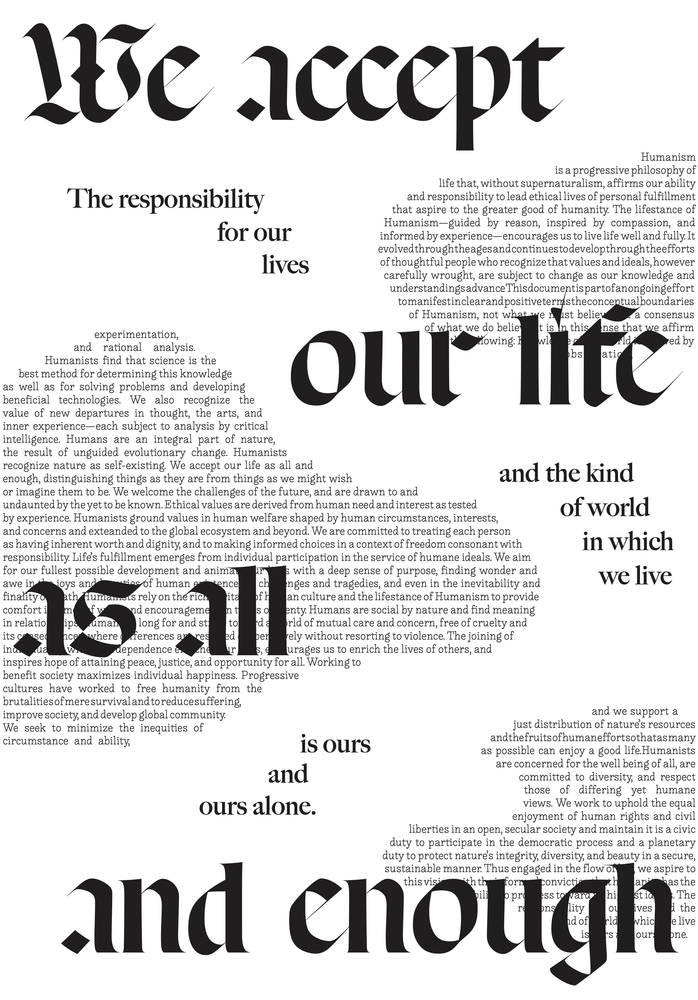
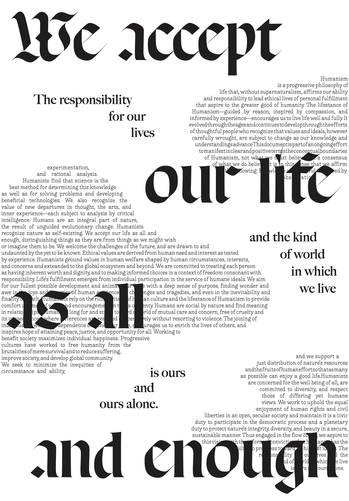

Type: Typography
Project: Manifesto Posters
Date: November 2023
A pair of posters: one created using the entire text of a manifesto and the other advertizing an event for a group associated with the manifesto. My chosen manifesto is Humanism and Its Aspirations: Humanist Manifesto III written by the American Humanist Association.
Both posters use Respira Black by Sharp Type, Lieberuth by Liebefonts, and Big Caslon by Carter & Cone. The layouts and font choices were inspired by the Renaissance origins of Humanist philosophy.
Project: Manifesto Posters
Date: November 2023
A pair of posters: one created using the entire text of a manifesto and the other advertizing an event for a group associated with the manifesto. My chosen manifesto is Humanism and Its Aspirations: Humanist Manifesto III written by the American Humanist Association.
Both posters use Respira Black by Sharp Type, Lieberuth by Liebefonts, and Big Caslon by Carter & Cone. The layouts and font choices were inspired by the Renaissance origins of Humanist philosophy.